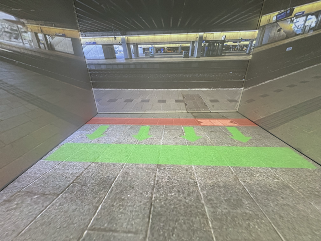
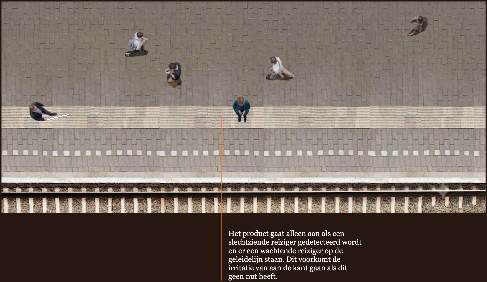
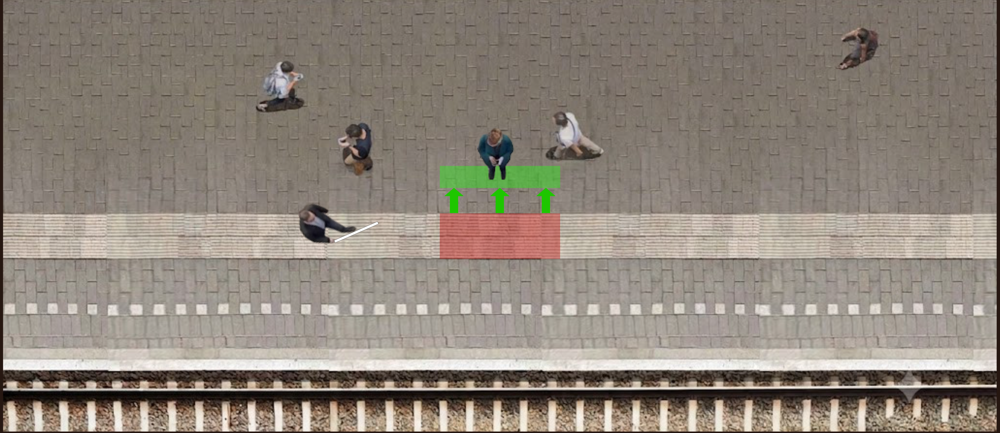
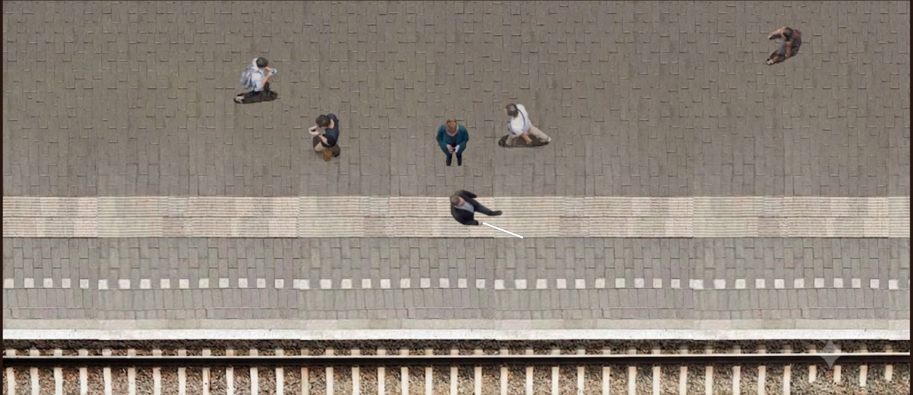

Sturing van Reizigers
Sturing van Reizigers is een concept waarin projecties worden gebruikt om reizigers van de geleidelijnen te laten stappen.
-
20 weken
-
Feb. 2026 - juni 2026
-
UX & Behavioural Design
Het probleem
Voor visueel beperkte reizigers zijn de geleidelijnen een onmisbaar middel om zelfstandig en veilig te navigeren. In de praktijk worden deze lijnen echter vaak geblokkeerd door ziende reizigers. Deze ziende reizigers bevinden zich vaak in een ‘hyperfocus’ op hun mobiel, waardoor ze onbewust op deze lijnen staan.
Wanneer een visueel beperkte reiziger de geleidelijn volgt, kan dit leiden tot onverwachte botsingen. Dit veroorzaakt schrik en irritatie bij de visueel beperkte reiziger en een gevoel van schuld of verwarring bij de wachtende reiziger.
Design Challenge
"Hoe kan ik het gedrag van ziende reizigers op de lange termijn veranderen, met als doel dat de geleidelijnen op treinstations vrijgehouden worden?"
Onderzoek en inzichten
Om achter het gedrag te komen, werd kwalitatief onderzoek gecombineerd met expert-interviews bij Koninklijke Visio, Bartimeus en Onbeperkt Amersfoort.
Gedragsanalyse van de wachtende reiziger
-
01
Reizigers zoeken een comfortabele plek om te wachten (leunen/zitten) of stellen zich op bij het perronvak waar hun treindeur stopt voor een snelle uitstap.
-
02
Reizigers willen niet aangesproken of gecorrigeerd worden door vreemden. Ze willen best helpen om de lijn vrij te houden, mits het geen extra moeite of cognitieve belasting kost.
-
03
Angst om te dicht bij de perronrand te staan of te dicht bij andere mensen. De geleidelijn voelt voor hen intuïtief als een 'veilige afstand' tot het spoor.
Benchmarkanalyse
Bestaande landelijke campagnes (zoals "Houd de lijn vrij") leunen sterk op statische beelden en stoeptegels. Deze hebben op lange termijn een lage conversie (ca. 8%), omdat reizigers er na verloop van tijd aan wennen en het signaal negeren.
Ontwerpen voor gedragsverandering
Met behulp van het SWAC-model is vastgesteld dat de actie extreem eenvoudig moet zijn om te werken op het moment dat belangrijk is.
Behavioural Statement
“Hoe zouden we de wachtende reiziger kunnen helpen om een locatie uit te kiezen op het perron om te staan wachten op de trein door ze een andere locatie te laten uitkiezen op het perron door ze te stimuleren om verder van het spoor te staan en een nieuwe vaste plek te creëren.”
-
16 kwalitatieve testen
-
5 expertinterviews
Prototypering en testen
Alle prototypen zijn getest in het Immersive Lab, waar de stationsomgeving werd geprojecteerd. De testpersonen kregen een opdracht om een reis op te zoeken in de NS-app om ze in de juiste mindset te krijgen.
De kerninzichten
-
01
Ziende reizigers staan op de geleidelijnen vanwege een gebrek aan oplettendheid of omdat ze een vaste plek hebben om te staan op het perron.
-
02
De hyperfocus die reizigers op hun mobiel hebben is een van de grootste oorzaken voor onoplettendheid.
-
03
Het product mag de wachtende reiziger geen gestraft of belerend gevoel geven.
-
04
Het product moet geactiveerd worden zodra een slechtziende reiziger deze gebruikt om irritatie te voorkomen.
-
05
Het product moet de wachtende reiziger intuïtief leiden om een stap achteruit te zetten van de geleidelijn af.
-
06
Kleurgebruik, zoals groene pijlen, leidt de wachtende reiziger intuïtief van de lijn af.
-
07
Symbolen zijn effectiever dan tekst.
-
08
Een gevoel van behulpzaamheid wordt gecreëerd als de wachtende reiziger opzij is gegaan voor de slechtziende reiziger zonder verdere interactie.
Het concept
Sturing van Reizigers is een projectie interventie die pas activeert wanneer een visueel beperkte reiziger de geleidelijn actief gebruikt én er een wachtende reiziger op de lijn staat.
Hoe werkt het?
* Vanwege privacy redenen is de detectie van slechtziende reizigers vrijwillig. Dit kan gekoppeld worden aan een locatietracker in de taststok.
* Om verwarring te voorkomen bij machinisten, wordt de projectie automatisch uitgeschakeld wanneer er een trein het perron op rijdt of op het perron staat.
-
1: Een slechtziende reiziger komt aanlopen.

-
De projectie gaat alleen aan als een slechtziende reiziger gedetecteerd wordt en er een wachtende reiziger op de geleidelijn staan. Dit voorkomt de irritatie van aan de kant gaan als dit geen nut heeft.
-
Er wordt gedetecteerd dat er een slecht ziende reiziger aankomt én dat iemand stilstaat op de geleidelijn.
-
-
2: De projectie gaat aan.
![Slechtziende reiziger komt aanlopen. Projectie gaat aan. Rode projectie op de geleidelijn met groene pijlen die de wachtende reiziger leiden naar het groene vlak achter de lijn. Teksten: 'Het kleurgebruik voegt toe aan het intuïtieve, waardoor de doelgroep automatisch richting het groene vlak loopt.', 'Voor de probleemsituatie plaatsvindt, wordt de wachtende reiziger uit de hyperfocus gehaald door de projectie.', 'Het product kan via zicht ervaren worden.', 'De projectie stuurt de wachtende reiziger verder van de perronrand af.'](../img/sturing-storyboard/bord3.png)
-
De projectie haalt de wachtende reiziger uit zijn hyperfocus op zijn mobiel en stuurt ze van de perronrand af. Het kleurgebruik zorgt ervoor dat ze automatisch naar het groene vlak lopen.
-
-
3: Geen fysiek of verbaal contact.

-
Voor de slechtziende reiziger dichtbij genoeg is voor een confrontatie tussen beide partijen, staat de wachtende reiziger al op het groene vlak.
-
-
4: De probleemsituatie wordt voorkomen.

-
Beide reizigers kunnen zonder slecht gevoel of irritatie verder gaan met hun reis. De slechtziende reiziger kan ongestoord verder lopen en hoeft niemand aan te spreken.
-
Evaluatie
Uit de testen bleek dat:
-
Wachtende reizigers geen negatief gevoel krijgen van het product. Ze zijn eerst verward, tot ze zelf de connectie leggen met de visueel beperkte reiziger,
-
Het product de automatische reflexen van de wachtende reiziger stimuleert om weg te stappen,
-
Aansluit bij de wens van wachtende reizigers om behulpzaam te zijn zonder aangesproken te worden.